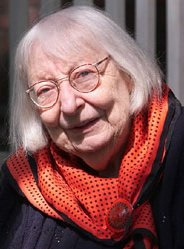
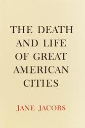
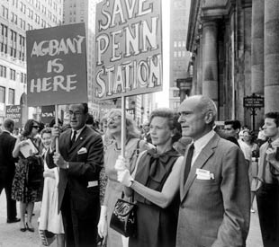
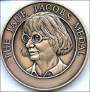

Exploring the Piazza dell’Arte: Jane Jacobs
We continue exploring the lives and works of the artists featured on the Piazza dell’Arte at Scranton’s Courthouse Square today with a profile of one of America’s most noted urban planners Jane Butzner Jacobs.
Jacobs was born May 4, 1916, in Scranton and attended Scranton Central High School. After graduation, she began an unpaid position as the assistant to the women’s page editor at the Scranton Tribune (now The Times-Tribune) before the onset of the Great Depression forced her to leave Scranton for New York City.
The move to New York would shape Jacobs’ career and interest in urban development. She took jobs working as a stenographer and as a freelance writer, often writing about working districts in the city. Jacobs eventually became the editor of a trade magazine, working her way up from secretary, before becoming a feature writer for the Office of War Information, where she met architect Robert Hyde Jacobs. The couple was married in 1944 and they would have two sons and a daughter together.
In 1961, Jacobs produced her most influential book, “The Death and Life of Great American Cities.” Still considered one of the finest American works on urban planning and cities, “The Death and Life of Great American Cities” critiques the urban renewal policies of the 1950s, claiming they destroyed communities with isolated, unnatural urban spaces. Jacobs, in contrast, supported dense, mixed-use neighborhoods and bolstered her claims with a theoretical approach that incorporated both solid data and subjective, intuitive observation.
She chaired the successful Joint Committee to Stop the Lower Manhattan Expressway in 1962 and would oppose expressways in favor of neighborhoods throughout her life. In another attempt to stop the Lower Manhattan Expressway in 1968, she was arrested during a demonstration.
The same year, Jacobs moved to Toronto in part because of her objection to the Vietnam War and to protect her two draft-age sons; she would become a Canadian citizen in 1974. While living in Toronto, she helped stop the proposed Spadina Expressway, was arrested twice during demonstrations and led the regeneration of the St. Lawrence neighborhood.
Jacobs published her second book, “The Economy of Cities,” in 1969 which included the arguments that cities are the primary drivers of economic development and that all economic growth derives from “import replacement” — a phrase that refers to a city producing locally goods that it formerly imported.
She helped found the Energy Probe Research Foundation, an environmental organization that demonstrated the environmental advantages inherent in cities and city life, in the late 1970s. She remained active with the group as a director until her retirement in the late 1990s and helped change public attitudes towards cities, showcasing their environmental advantages.
Jacobs advocated Toronto separating from the city of Ontario and published her perspective on Québec’s sovereignty in her book “The Question of Separatism: Quebec and the Struggle over Separation” in 1980.
Her contribution to urban planning and development in and around Toronto led to her being selected as an officer of the Order of Canada in 1996; and in 1997, Toronto sponsored a conference titled “Jane Jacobs: Ideas That Matter,” which culminated in the presentation of the Jane Jacobs Prize to be given to “celebrate Toronto’s original, unsung heroes — by seeking out citizens who are engaged in activities that contribute to the city’s vitality.” The Community and Urban Sociology section of the American Sociological Association awarded Jacobs its Outstanding Lifetime Contribution award in 2002.
She died in Toronto Western Hospital at the age of 89, on April 25, 2006, apparently of a stroke but her legacy lives on. The Rockefeller Foundation announced on February 9, 2007, the creation of the Jane Jacobs Medal, “to recognize individuals who have made a significant contribution to thinking about urban design, specifically in New York City.”
The City of Toronto proclaimed Friday May 4, 2007 as Jane Jacobs Day in Toronto. Two dozen free “Jane’s Walks” were held around Toronto neighborhoods on May 5, 2007. A Jane’s Walk event was held in New York in on September 29 and 30, 2007 and, this year, the event has spread to eight cities and towns across Canada.
Spiritual Heir: Dan Brennan. While not involved in Scranton’s urban planning in an official capacity, Brennan has shown as much dedication to the renewal of this city as Jacobs did New York and Toronto. As the editor and publisher of The Antenna magazine, Brennan has celebrated the best of Scranton and pointed out the areas of the city’s structure that could use improvement. Jacobs advocated the development of thriving urban communities in the style of New York’s Greenwich Village. Last month, Brennan organized Scranton’s first-ever art festival, the Scranhattan Festival; it was an event that surely would have made Jacobs proud of her hometown.
This article was part of a series that explored the lives and legacies of the artists featured on the Piazza dell’Arte at Courthouse Square, Scranton. It first appeared on Electric City Renaissance. Read the rest of the series.